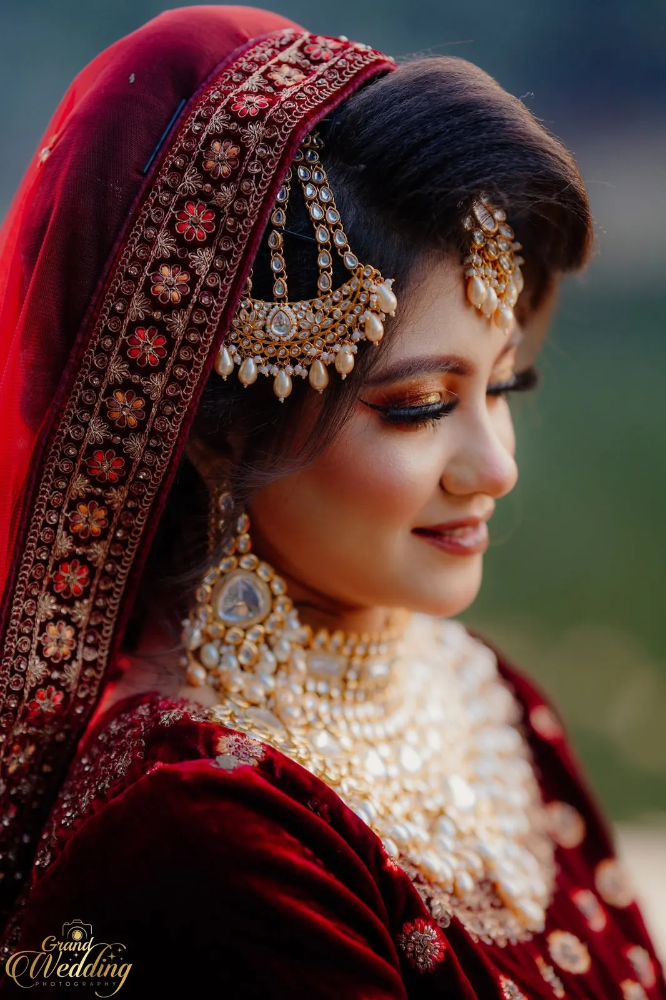

Photography Portfolio
Stories, not random highlights.
Explore the work as complete visual sequences, then scroll the full supplied archive of 140 wedding photographs.
Wedding stories
Follow the celebration from frame to frame.
Each story groups photographs that belong to the same visual sequence or setting, so you can see consistency rather than only the strongest single images.
Complete archive
Every supplied photograph, in one place.
All 140 supplied photographs are included here. Thumbnails are lazy-loaded and open into a larger viewer when selected.